Ken Noble, 1924 - 2002
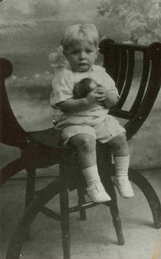
Ken Noble 1927
Ken Noble was born at 5 Guys Terrace , Blue Bell Hill Road, Nottingham on November 22 1925, the first child of George and Edith Noble. Ken's father was described as a Plasterers Labourer and he had married Edith Ambrose (nee Marsh) earlier that year. Edith had a child, Miriam Ambrose, from her first marriage. In 1931, when Ken was 3, his parents had another child, Ray and when Ken was aged 5 the family of five moved to 146 Wendover Drive in Aspley, Nottingham. Ken went to the newly opened William Crane School.
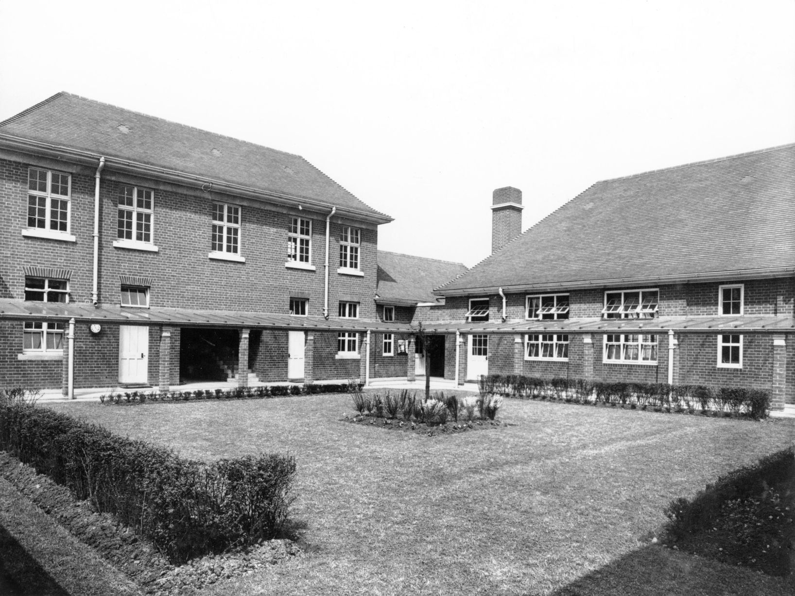
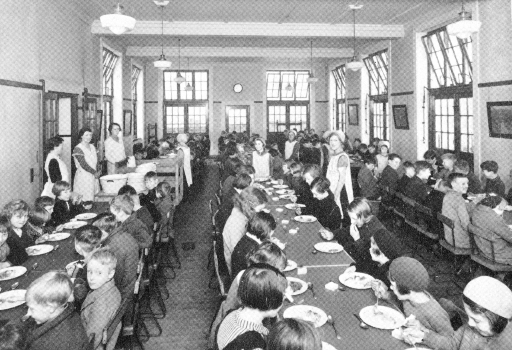
Ken's childhood was badly disrupted by the death of his mother when he was just 7 years old. Ken's father, George, was unable to cope alone with three children so the family moved in with his aunt and uncle, Hetti and Joe Kirkham, firstly in Sturton Road and then Russell Road. By 1938 they were living in Western Boulevard. Hetti was the sister of Ken's late mother. They were also cared for by their aunt Ethel who lived in Guys Terrace in Blue Bell Hill. Ken's father George spent some time with the children but eventually he left them in the care of Hetti and Joe and eventually remarried. As a teenager Ken was a member of the Nottingham Boys Brigade where he learnt to play the drums. This was a skill that proved useful later in life.
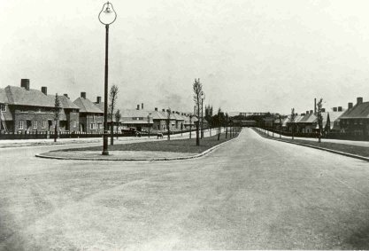
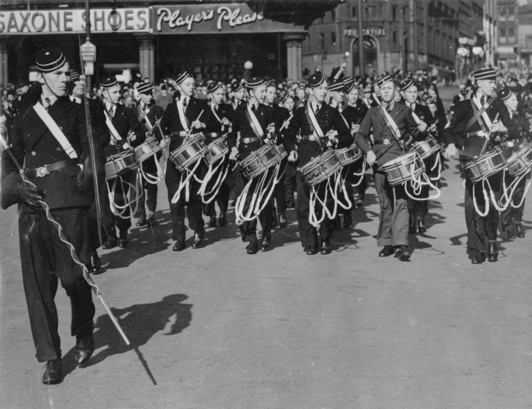
Boys Brigade Parade, Nottingham 1939
At the outbreak of war in 1939 Ken left school aged 14 and took up employment as a Tobacco Worker with Players in Nottingham. Three years later he volunteered for war service in the Royal Navy on 31 August 1943, just before his 18th birthday, in order to avoid possible conscription to the mines. War service was spent serving as a signaler, primarily in the Far East with the East Indies Fleet and he was present at the Japanese surrender in Singapore in September 1945.
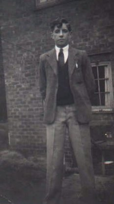
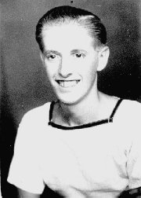
On demobilisation from the Navy, on 30 November 1946, Ken returned to live with his aunt Hetti and uncle Joe in Western Boulevard Nottingham. He found employment with Shipstone's Brewery, where his father was a chargehand and his uncle Joe a brewer. Starting in the coopering shop he soon moved to the offices, working in the Accounts Dept of the brewery as a Finance Clerk. Within four years he became a stock-taker of Shipstone's pubs in Nottingham.
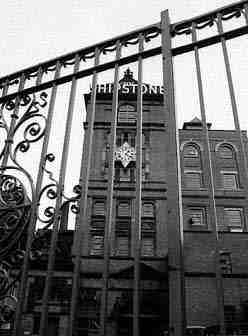
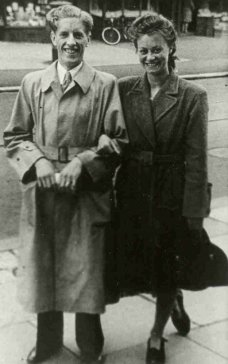
Ken and Mavis Blackpool 1947
In 1947 Ken met Mavis Drury. After returning to Nottingham he had befriended her mother and father at the Cocked Hat in Aspley. Ken married Mavis at Christchurch, Cinderhill in January 1949 and they moved into a small terraced house in Sherwood Street in central Nottingham. Ken continued to work in the Accounts Department of Shipstone's Brewery whilst Mavis gave up her dressmaking job at CS Wardle and Son in Castle Boulevard. In October 1950 Mavis gave birth to their first child, Michael.
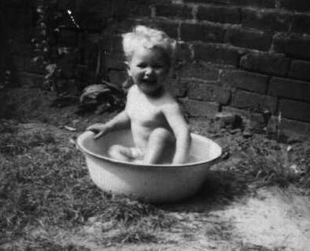
After four years they finally secured a larger property in Leybourne Drive, Bestwod. The family remained here for three years during which time Ken became a stock-taker for Shipstone's pubs. Eventually, in 1956, Ken was appointed as Assistant Manager of Trumans Vaults in Nottingham Market Square. The role came with a house and the family moved to a large property on Mansfield Road that was owned by Shipstones. It was during this period that Ken had his own dance band playing in local venues in Nottingham and further afield.
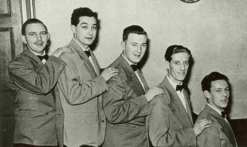
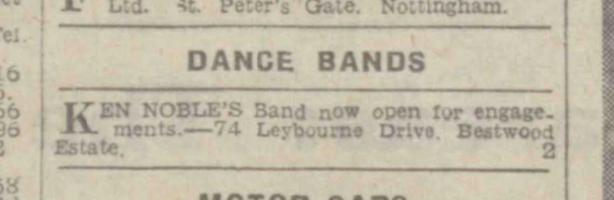
Part of Ken's Assistant Manager duties also involved relief management of other Shipstones pubs in and around Nottingham. He managed The Wolds in West Bridgeford and The St Annes Well in St Annes Well Road. In 1957 he was asked to oversee the transfer of the Athol Hotel in Sheffield from Shipstones to another brewery. This lasted a number of months and the family did not return to Mansfield Road until 1958 and Ken returned to his Assistant Manager role at Trumans. Frustrated at not having his own permanent pub Ken applied to James Hole of Newark to manage a new pub in Corby in Northamptonshire and in 1958 the family eventually left Nottingham for the Shire Horse, where Ken became Corby's longest serving licensee. Whilst in Corby Ken and Mavis had there second son, Kevin in 1962.
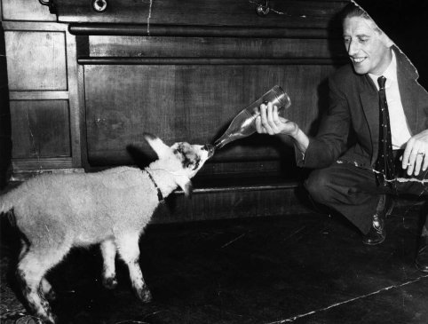
Ken and Cocoa the family pet, Shire Horse 1968
Ken and Mavis became well known in Corby and both led their respective branches of the LVA, but after 14 years they moved, in 1971, to the sleepy Rutland village of Edith Weston to take over the Wheatsheaf Inn. Ken saw the Wheatsheaf through some major changes with the opening of Rutland Water but after 8 years he was drawn back to the Corby area and the Kings Arms in Weldon. This was to be his last pub and in 1985 he and Mavis eventually retired to the bungalow in the Rutland village of North Luffenham, that they had purchased in 1974. Ken worked part-time as a driver for Uppingham School.
Ken passed away at his North Luffenham home on September 3, 2002 at the age of 77.